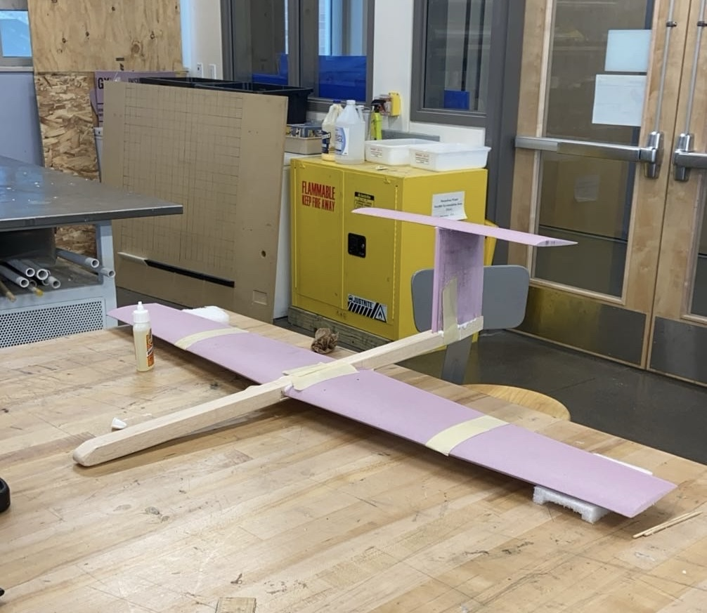
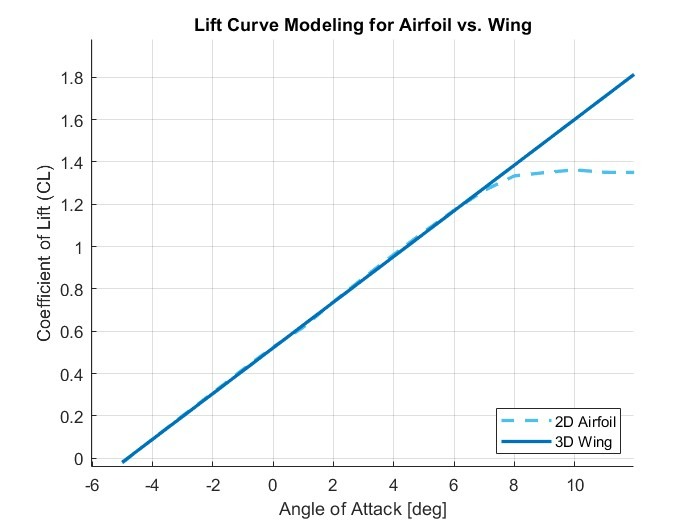
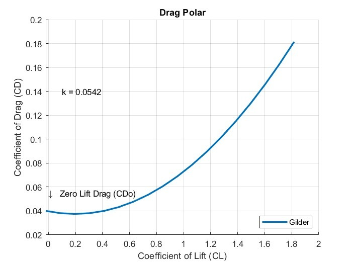

Fixed wing glider
We designed, built, and hand-launched a 1 m fixed wing glider with a goal of gliding 100 m from a 14.5 m height. Our glider fell well short of our model's prediction, and this is where I learned the difference between prediction models and reality
My role
Configuration trade, MATLAB sizing and sensitivity study, CNC fabrication, and flight test with my team.
- Wingspan
- 1.0 m
- Aspect ratio
- 7
- Wing airfoil
- Eppler 393
- Predicted
- 140 m
- Best flight
- 51.6 m
Predicted vs. flown
Distances to scale horizontally. Height exaggerated for readability.
Best flight vs. predicted range
Why it fell short
- Our glider stalled on nearly every flight due to the trim AoA being too high, airspeed too low
- Launch angle and velocity weren’t in the model, and they decided whether it entered a stable glide
- The analysis wasn’t wrong. It was incomplete and I carried this mindset into future projects.
Engineering deep dive
What we did
- MATLAB sensitivity sweep on every major sizing parameter, doubling or halving each until range peaked, then bisecting to the optimum. Wing area dominated range, so we maximized it up to the 1 m span limit, and we kept the fuselage small and light
- Drag polar by component buildup (CD0 = 0.0396) with the Obert model for span efficiency, used to find max L/D for range and the different speed for max endurance
- 3D lift curve corrected from 2D Eppler 393 data, with airfoil data matched to our expected Reynolds number
The call we made
We researched several configurations, including a twin fuselage modeled on the Virgin GlobalFlyer and a high aspect ratio sailplane modeled on the AS 33. Both were too complex to fabricate and model within our 1 m span limit and 10 week schedule. We chose a conventional high wing and T-tail, a layout based on well performing gliders that we could build, modify, and model with confidence.
Iteration
Initial configuration testing showed a nose dive with a fixed tail. We added adjustable tail incidence and found ~5° gave trimmed flight through test flights.



Design notes
Configuration
The high wing puts the aerodynamic center above the CG for a passive roll restoring effect. The T-tail keeps the stabilizer out of the wing and fuselage wake, so a smaller surface gives stable pitch authority. Natural stability, no active control.
Sensitivity method
For each parameter we doubled or halved an estimate until range overshot its peak, then bisected toward the optimum. Wing area drove range most; fuselage weight and frontal area hurt it; taper, sweep, and stabilizer planform barely moved it, so we set those for easy fabrication.
Stability
Neutral point at 0.12 m from the leading edge, with CG placed forward for a static margin inside the required 10–30%.
Flight test method
Flights at several tail incidence angles let us map the drag polar experimentally, computing CL and CD from measured range and comparing against the model. Average flight time was about 8 seconds.